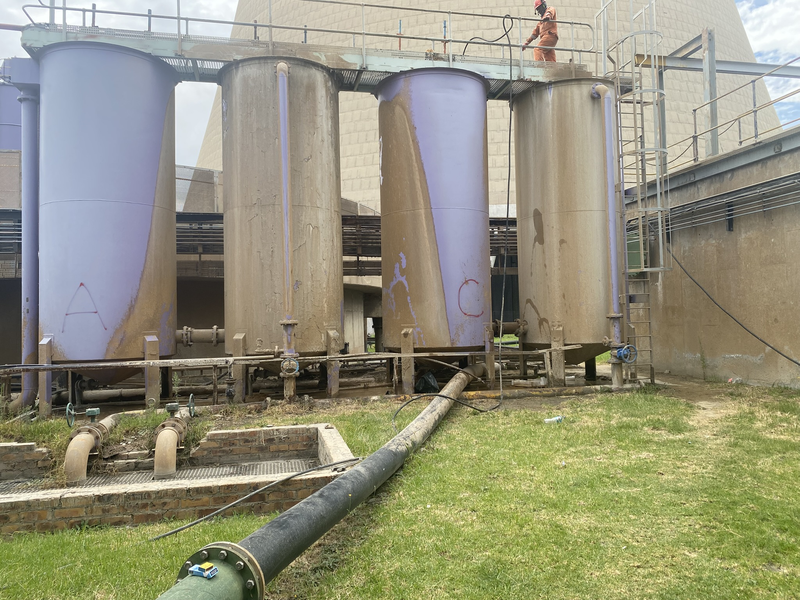
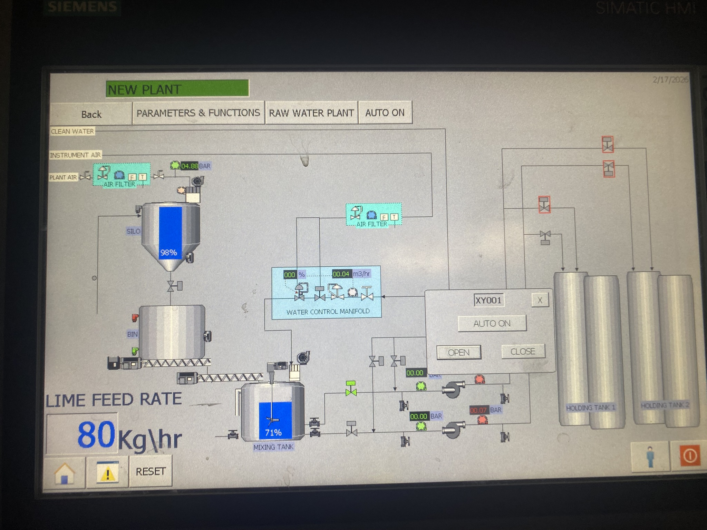

Industrial Automation and Process Control
Kriel Power Station – Lime Slurry Makeup Plant
This project concerns the automation of a hydrated lime slurry preparation and transfer system for Kriel Power Station. The process includes bulk lime storage, intermediate hopper replenishment, variable-speed lime dosing, water-flow regulation, slurry mixing and transfer to two dilution tanks.
Project focus: PLC control philosophy, sequential control, instrumentation, interlocking and alarm management.
Engineering scope
The documented control system incorporates automatic silo filling, level-based hopper replenishment, dosing screw control, mixing tank level regulation, pump routing and automated flushing. Operating sequences define the required equipment start/stop order, valve-position verification, process permissives and responses to abnormal conditions.
The control philosophy also specifies major and minor equipment failure responses, process alarms, emergency shutdown procedures and backup-power requirements for selected equipment.
Key automation concepts
- Sequential PLC control and equipment coordination.
- Process instrumentation and 4–20 mA analog signals.
- Flow and level control loops.
- Variable-speed drive setpoint calculations.
- Equipment permissives, interlocks and feedback monitoring.
- Automated pump flushing and valve sequencing.
- Alarm handling and controlled shutdown/restart procedures.
Project images


Personal contribution
Contributed to control-system design, PLC programming, documentation review, simulation and testing. Commissioning activities are not included in this contribution.
Engineering value
This project provides a practical example of how process requirements are translated into structured automation requirements, linking instrumentation, equipment operation, process control and fault handling into a coordinated control philosophy.